INTERACTIVE ARTS 1: FALL '15
- Instructor: Sam Sheffield (ssheffield@mica.edu)
- This Site (Short URL): tiny.cc/ia1f15
- Online syllabus: ia1syllabus.pdf
- Code repository: github.com
09/15: GENERATIVE ART
DETAILS
Welcome everyone!
- Share homework.
- Contemporary Generative Art
- Processing 3: Improved conditional logic, keyboard + mouse input, images, text
- Reading
HOMEWORK
Let's take a quick look at everyone's drawings
- Run your sketch on your computer.
- Use Sketch -> Present to hide the computer background.
- Make sure to upload it to your class Drive folder (link sent out this past weekend).
BUILDING UNIMAGINABLE SHAPES
"What kind of forms could we design if we wouldn't work with references any more? If we had no bias, if we had no preconceptions... What kind of forms could we design if we could free ourselves from our experience? If we could free ourselves from our education... What would these unseen forms look like?" from Michael Hansmeyer's TED talk on generative systems
CONTEMPORARY GENERATIVE ART
LIA & DEXTRO (TURUX.AT)
Website: http://www.liaworks.com/
Lia: Recent work (liaworks.com)
Filament Sculptures, 2014
JOSHUA DAVIS (PRAYSTATION.COM)
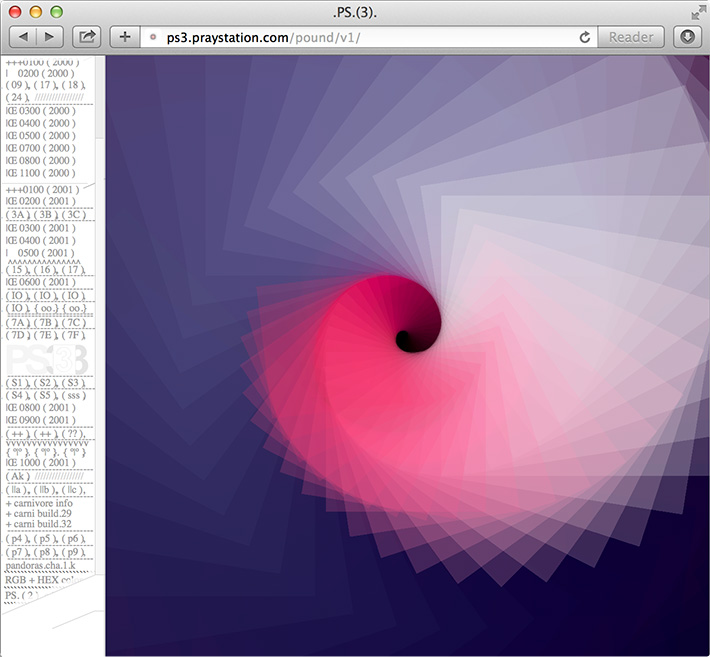Recent work (joshuadavis.com)
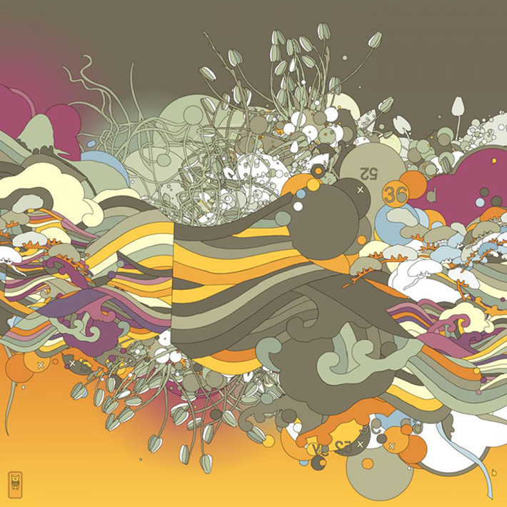Oleander Vine, 2007
Video for Fall in Love by Phantogram, 2014.
MARIUS WATZ
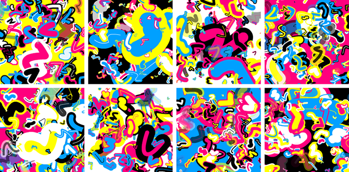220px, 2005 (link)
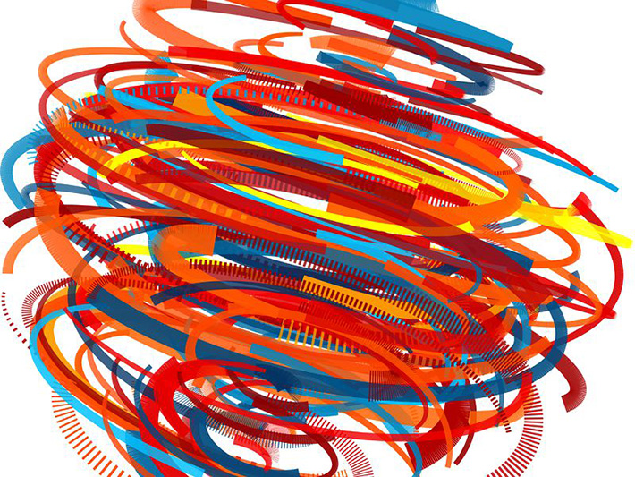Illuminations B, 2007
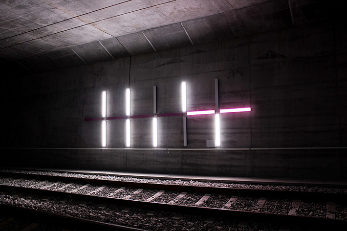 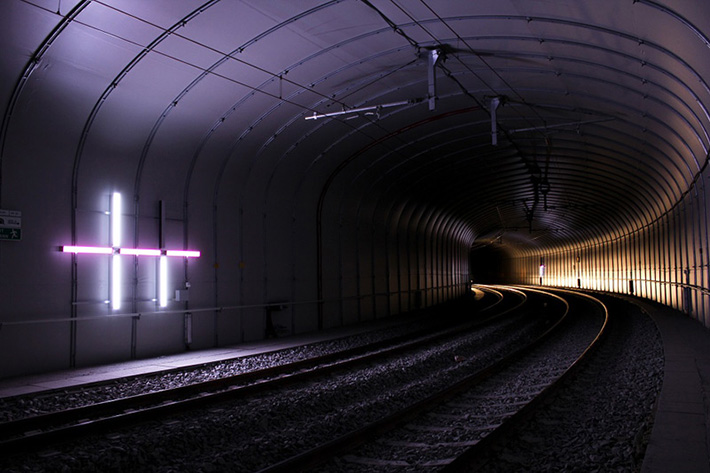Prime, 2010
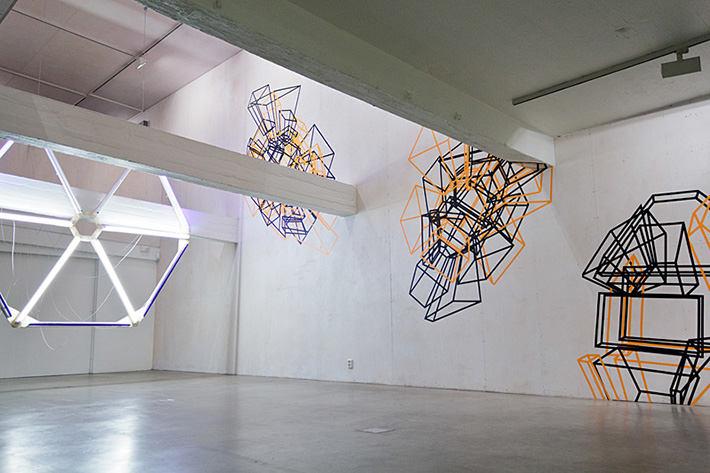 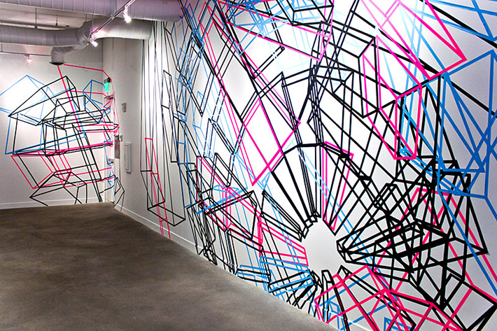Wall Exploder A & B, 2011
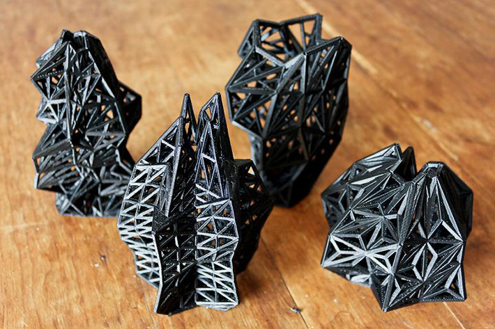Probability Lattice, 2012
ONFORMATIVE
Growing Data, 2010
4010- Facebook Tree, 2013 (link)
Unnamed Soundsculpture, 2012
Unnamed Soundsculpture (documentation), 2012
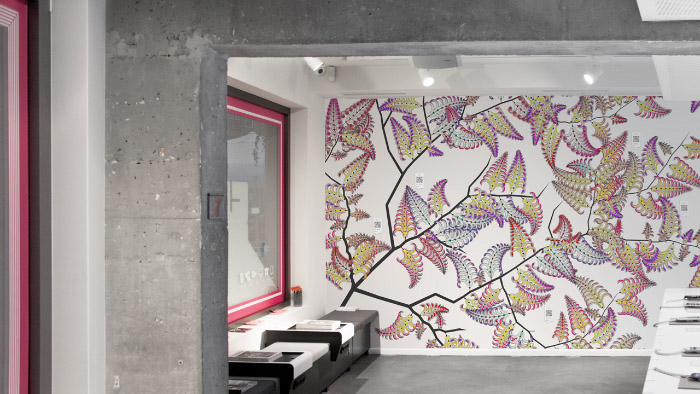FIELD
Communion (w/ Universal Everything), 2011 (link)
Deutsche Bank - Hi-Res Realtime Artworks, 2011 (link)
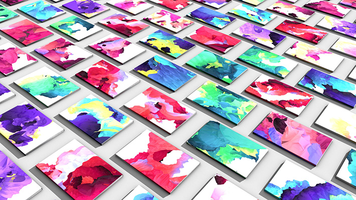GF Smith - 10,000 Paintings, 2012 (link)
Nike Hyperfeel, 2013 (link)
PROCESSING 3: IMPROVED CONDITIONAL LOGIC + INPUT + IMAGES + TEXT
NEW STUFF!
- else if
- Logical operators: && and ||
- mousePressed vs mousePressed()
- mouseX and mouseY
- Creating simple buttons
- keyPressed vs keyPressed() and key
- PImage
- String and text()
EXAMPLES
Example code available here.